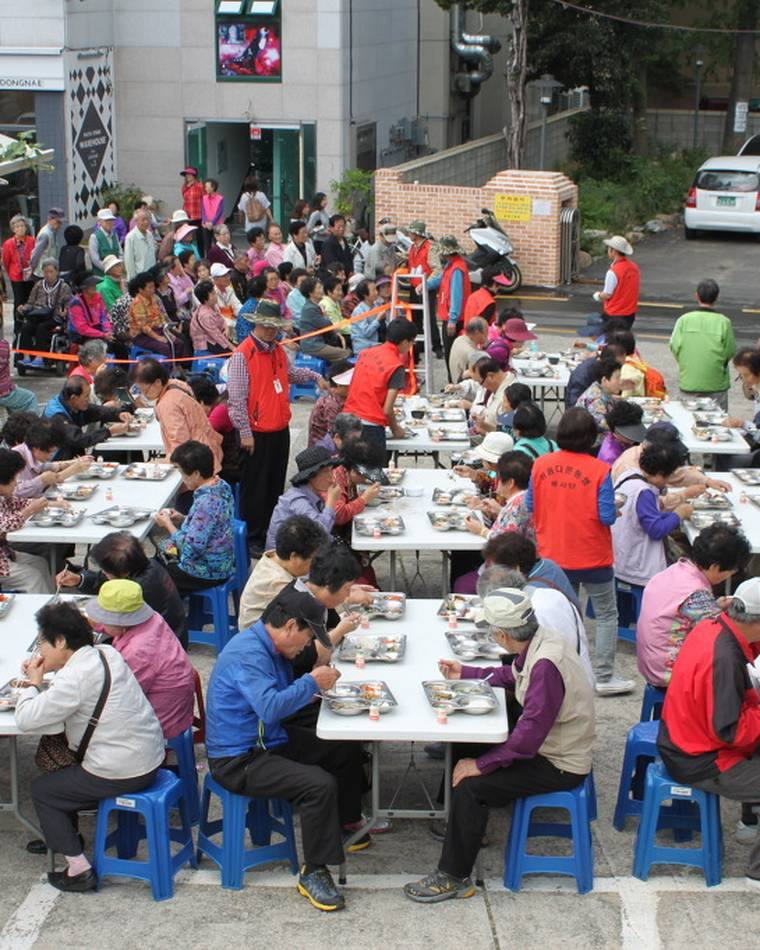

어르신 무료급식
매달 첫째 주 토요일, 어르신 500~600분께 밥상을 차립니다. 오랫동안 동래구청 후문 국제주차장에 상을 펴 왔고, 지금은 동래구 참뷔페에서 이어집니다. 그날은 식당 문을 닫고 홀과 앞 주차장을 급식소로 씁니다. 새벽부터 회원들이 모여 국을 끓이고 상을 놓고, 식사가 끝나면 자리를 원래대로 되돌려 놓습니다. 은빛의료재단이 함께한 날에는 급식과 의료봉사가 나란히 진행됩니다.
일시 매달 첫째 주 토요일
장소 참뷔페 (홀 및 앞 주차장)
이전 동래구청 후문 국제주차장
규모 어르신 약 500~600분
대표사업
장소 참뷔페 (홀 및 앞 주차장)
이전 동래구청 후문 국제주차장
규모 어르신 약 500~600분
